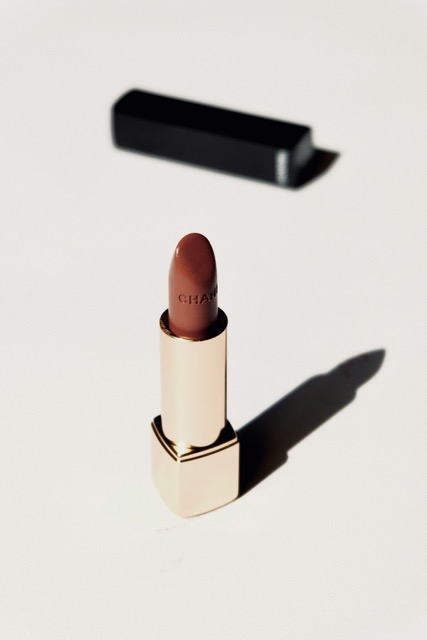

靜態攝影
曝光三角
- 光圈
- 快門
- ISO
光圈
控制光線進入的量
單位：f值，如f1.8、f8
數值愈小，光圈愈大，進光量愈多，景深愈淺
數值愈大，光圈愈小，進光量愈少，景深愈深
快門
感光元件暴露在光線的時間
單位：秒，如2秒、1/60秒、1/1600秒
秒數短，進光時間短，照片愈暗
秒數長，進光時間長，照片愈亮
ISO
對光線的敏感程度
單位：數值，如ISO800、ISO1600、ISO6400
數值愈高，對光愈敏感，噪點愈多
數值愈低，對光愈不敏感，噪點愈少
拍攝模式
- 全自動
- 程式
- 光圈優先
- 快門優先
- 手動
全自動
所有的控制都交給相機自動幫你完成，無腦拍就對了！
程式
光圈與快門相機自動幫你計算出最理想數據。
光圈優先
使用者決定光圈，快門由相機計算。
快門優先
使用者決定快門，光圈由相機計算。
手動
全部都由使用者自訂參數。
拍攝實戰!!
手機基本操作
- 開啟格線
- 對焦框與曝光對焦鎖定
iPhone 開啟格線：設定/相機/格線
Android 打開相機/點選左上或右上的齒輪/網格線
如果找不到可能有其他的名稱，如格線、參考線等
第一步:打光
光源種類
- 自然光
- 太陽光
- 窗光
- 人造光
- 持續燈
- 閃光燈

光線質感
- 硬光與柔光
- 硬光柔光是相對概念
- 硬光特色：陰影邊緣相對銳利
- 柔光特色：陰影邊緣相對模糊
- 光源的面積才是決定硬柔光的關鍵
練習： 找一個不超過拳頭大小的物品
用你覺得最好看的方式拍下來
拍完之後請觀察照片中的光影
發現問題了嗎？
- 光影過於複雜
室內光的光源通常很複雜 所以需將原來的室內燈關閉 只留下主要的攝影燈 讓光源單純
再拍一次看看
如果有自然光，也會是理想的光源喔
打光角度
45度-65度
打光方向
- 順光
- 側光
- 逆光
練習： 將剛剛的物品，分別用順光、側光以及逆光拍攝
並觀察物體與光影之間的關係
你最喜歡哪個？
- 順光通常會感覺平面較沒立體感，側光則相對立體。
- 逆光可以讓輪廓突出，但主體變暗。